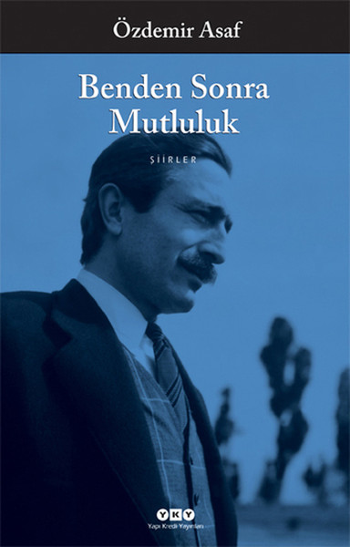
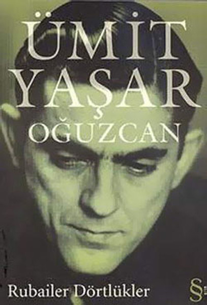
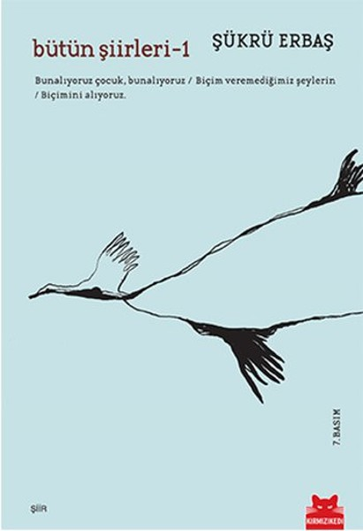
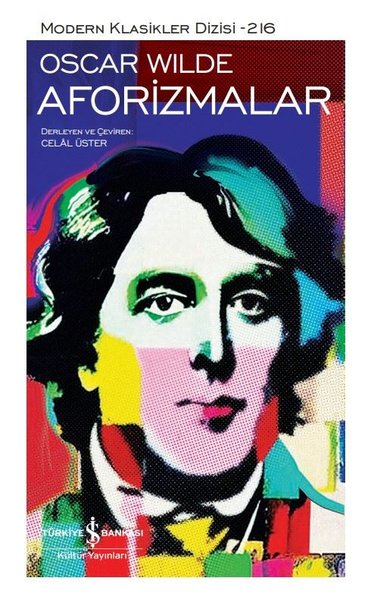
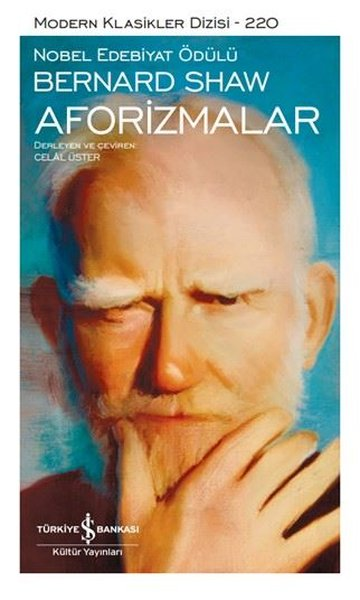
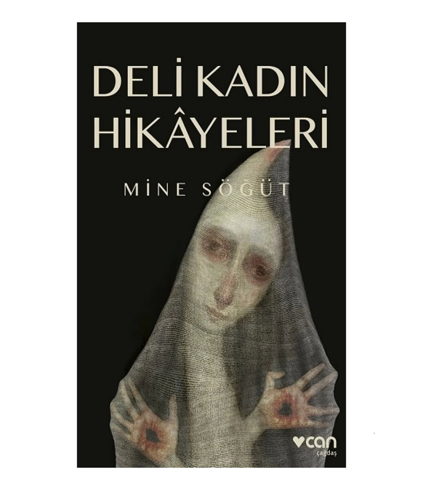
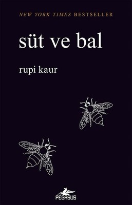

"Tenin günahları hiçbir şeydir.eğer tedavi edilmeleri gerekiyorsa,hekimlerin tedavi edeceği hastalıklardır bunlar.utanç verici olan yalnızca ruhun günahlarıdır."
— oscar wild, Yalnız Sıkıcı İnsanlar Kahvaltıda Parıldar

"unutmayın ki yaşam öldüresiye güzel değildir."
— Özdemir Asaf ,
Benden Sonra Mutluluk

"Bir ömre değer sevdiğimin bir gecesi...
Ağzımda duadır adının her hecesi.
Fani yaşayıp böyle ölümsüz sevmek,
Âlemde bütün sevgilerin en yücesi."
— Ümit Yaşar Oğuzcan, rubailer dörtlükler

"yakıştırarak giydiğim hiçbir şeyim yok.öyle tiksiniyorum ki üstümdeki giysilerden gücüm yetse inan,becerebilsem tenimi bile soyunurum yüreğimden."
— şükrü erbaş , bütün şiirleri 1

"sana sıradan biriymişsin gibi davranan birine sakın aşık olma."
— oscar wild, aforizmalar

"bir yokluğum varsa yaşamak için bir nedenim var demektir.doyum ölümdür."
— bernard shaw, aforizmalar

"Size bir sır vereyim Hep aynı kadın ölecek
Hep aynı kadın doğuracak
Hep aynı kadın kaçacak
Her şey birdir
Her şey birdir
O kadın...o aynı kadın...külliyen delidir."
— mine söğüt, deli kadın hikayeleri

"Nehir olur dökülür ağzımdan Gözlerimin tartamadığı yaşlar."